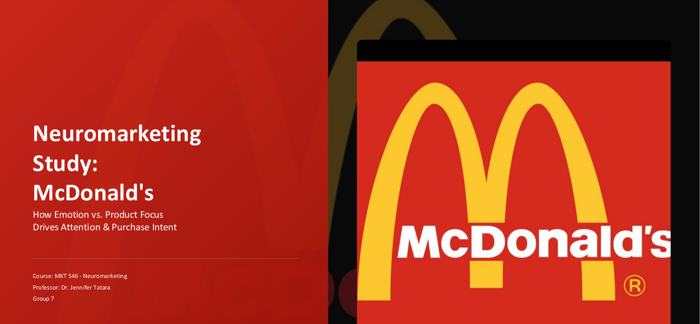
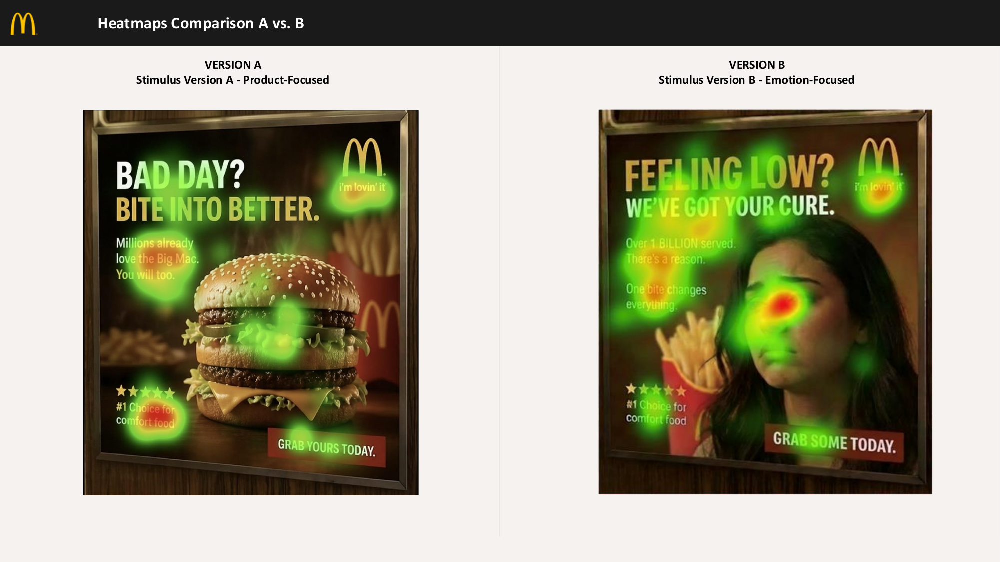
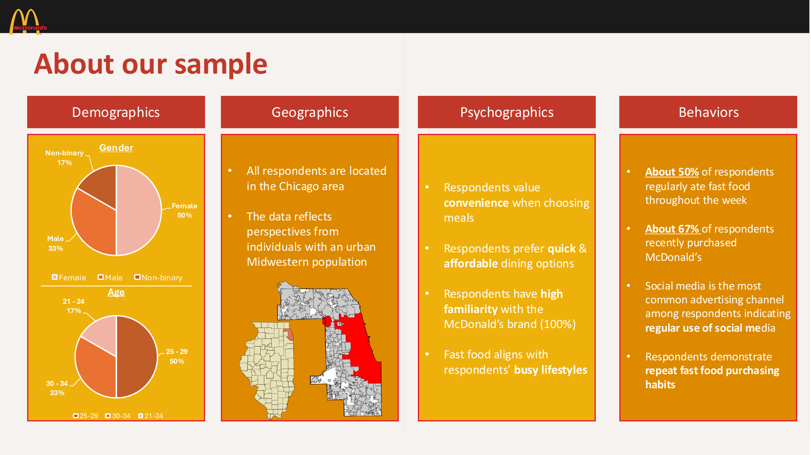
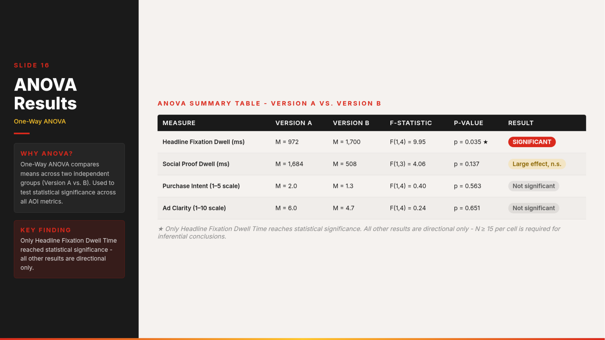
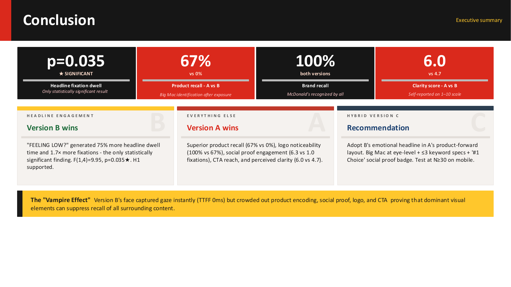

Does attention translate into action?
Role: Designed the eye-tracking study, ran the iMotions data collection session, and analyzed attention, recall and brand-identification results.
Does the ad creative that captures the most attention also produce the strongest brand recall?
Brands often optimize creative for attention: the ad people notice first. But attention and memory are not the same thing. This was an independent academic research project analyzing two McDonald's ad creatives, not client-commissioned work, built to test whether the most attention-grabbing execution was also the one people actually remembered and correctly attributed to the brand afterward.
Two McDonald's ad creatives: one product-focused, one emotion-forward. Participants viewed both while wearing iMotions eye-tracking equipment, then completed a Qualtrics survey measuring unaided recall and logo identification.
iMotions eye-tracking captured gaze patterns and attention heatmaps for each creative. The Qualtrics follow-up survey then measured what participants could recall unaided and whether they correctly identified the brand's logo.

Heatmap comparison: original iMotions eye-tracking outputThe product-focused creative won on both memory measures.
The emotion-forward creative held attention, but that attention didn't convert into memory or brand attribution as reliably. Headline fixation dwell time was the only statistically significant result across the AOI metrics tested (972ms product-focused vs. 1,700ms emotion-forward, F(1,4)=9.95, p=.035); social proof dwell, purchase intent and ad clarity all moved in the product-focused creative's favor but did not clear statistical significance at this sample size. The emotion-forward creative's face element captured gaze instantly (time-to-first-fixation of 0ms), and that dominance crowded out attention to the product, logo and CTA, what the study's write-up calls the "Vampire Effect."
The recommendation was to lead with product-forward creative whenever the campaign goal is recall or brand identification, and to reserve emotion-forward, attention-first executions for objectives where pure engagement (watch time, shares) matters more than memory. A hybrid approach (product visibility maintained even inside an emotionally driven scene) was proposed as the strongest middle path.
This was independent academic research, not a live McDonald's campaign, so there is no observed business impact to report. The impact is the finding itself: clear, measured evidence that attention and marketing effectiveness are not identical, and a concrete decision rule for creative teams weighing the two.
Academic research doesn't come with team or office photos, so Behind the Work here is the working files: the research artifacts behind the finding.



Attention and memory diverged: the emotion-forward creative held gaze, but that attention didn't convert into recall or brand attribution. Product-focused creative won on both memory measures, 67% recall vs. 0% and 100% logo identification vs. 67%, plus higher social proof fixation (6.3 vs. 1.0), ad clarity (6.0 vs. 4.7) and purchase intent (2.0 vs. 1.3). Only headline fixation dwell time reached statistical significance (p=.035), so those secondary measures are directional, not confirmed, at this sample size. Together they reframe "does it get noticed" as a separate question from "does it get remembered."
Test a hybrid creative that keeps the product visible inside an emotionally engaging scene, to see whether it can hold attention without losing recall. This is a hypothetical next step, not yet conducted.